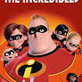

სუპერ ოჯახი 2 (ინგლ. Incredibles 2) — 2018 წლის ამერიკული კომპიუტერული ანიმაციური სუპერგმირული ფილმი, რომელიც წარმოებულია პიქსარის სტუდიის მიერ და გამოიდა Walt Disney Pictures-ის მხარდაჭერით. ფილმის სცენარის ავტორი და რეჟისორია ბრედ ბერდი. სუპერ ოჯახი 2 არის სუპერ ოჯახის (2004) გაგრძელება. სიუჟეტი მიჰყვება პარების ოჯახს, როდესაც ისინი ცდილობენ აღადგინონ საზოგადოების ნდობა სუპერგმირებისადმი. ოჯახი ერთად იბრძვის ახალი მტრის წინააღმდეგ. კრეგ ნელსონი, ჰოლი ჰანტერი, სარა ვოველი და სამუელ ლ. ჯექსონი პირველი ფილმის მსგავსად, აქაც ასრულებენ როლებს. მონაწილეობენ ახალი მსახიობებიც, როგორებიცაა: ჰეკლბერი მილნერი, ბობ ოდენკირკი, კეტრინ კინერი და ჯონათან ბენქსი. მაიკლ ჯაკინო ფილმის კომპოზიტორია.
